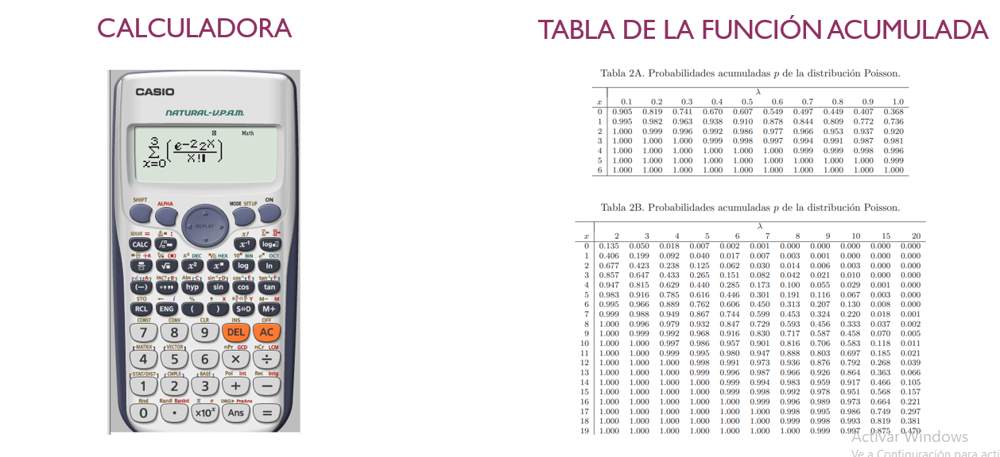

Describe el numero de eventos por intervalo de tiempo o distancia, tiene una tasa de ocurrencia que se denota por la letra \(\lambda\).
Por ejemplo:
Clientes por hora
Fallas por metros en rollos de tela
Llamadas por hora
Carros que pasan por un peaje
\[P(x=x)=f(x)=\frac{e^{-\lambda}\lambda ^x}{x!}\] Donde \(\lambda\) representa la tasa de ocurrencia de los eventos, es mayor que cero y puede tomar diferentes valores bien sea enteros o con decimales
X es el número de ocurrencias del evento con x= 0,1,2,3,…
Poisson requiere unidades consistentes
Numero promedio de clientes por minuto
Numero promedio de clientes por hora
Numero promedio de clientes por día
Si x se distribuye poisson se denota:
\[X\sim poisson(\lambda)\]
\[E(X)=\lambda\]
\[var(x)=\lambda\]
\[sd=\sqrt{\lambda}\]
El número de eventos durante un intervalo de tiempo de duración t es una variable de poisson con parámetro \(\alpha t\)
\[P(x=x)=f(x)=\frac{e^{-\alpha t}{(\alpha t)} ^x}{x!}\]
así que el número esperado durante un intervalo de tiempo unitario es \(\alpha\). Es decir la tasa de ocurrencia de un evento se puede modificar, si esta en horas se puede pasar a otra unidad de medida minutos, horas.
\[P(x\leq x)=F(x)=\sum_{x=0}^n \frac{e^{-\lambda}\lambda ^x}{x!}\]
Las probabilidades se pueden encontrar mediante tres formas por calculadora, por tabla o por las funciones de R:

El número de solicitudes de ayuda recibidas por un servicio de grúas es un proceso Poisson con razón 4 solicitudes por hora.
Calcule la probabilidad de que exactamente diez solicitudes sean recibidas durante un periodo particular de 2 horas.
La tasa de ocurrencia del evento es:
\[\lambda= \frac {4 llamadas}{hora}\]
La tasa se debe modificar a la unidad del tiempo de la pregunta
\[\lambda= \frac {4 llamadas}{hora}* 2 horas= \frac{8 llamadas}{2 horas}\]
La probabilidad pedida es:
\[P(x=10)=f(x)=\frac{e^{-\lambda}\lambda ^x}{x!}\] La probabilidad pedida es:
\[P(x=10)=f(x)=\frac{e^{-8}8 ^{10}}{10!}=9.92 \%\] En R
dpois(x=10,lambda=8)## [1] 0.09926153b.Calcule la probabilidad de que por lo menos cinco solicitudes sean recibidas durante un periodo particular de 2 horas.
\[P(x \geq 5)= 1- P(x\leq 4)=1-\sum_{x=0}^4 \frac{e^{-8}8 ^x}{x!}=90.03\% \] En R la respuesta es:
Nota: El argumento lower tail si es falso, es equivalente a \(P(X>x)\), es por ello que la probabilidad de al menos 10 se debe evaluar en el valor anterior 9.
ppois(4,lambda=8,lower.tail = FALSE)## [1] 0.9003676La tasa se debe modificar a la unidad del tiempo de la pregunta
\[\lambda= \frac {4 llamadas}{hora}* \frac{1 hora}{60 minutos}*30 min= \frac{2 llamadas}{30 min}\] la probabilidad pedida se traduce en
\[p(x=0)= \frac{e^{-2}2 ^0}{0!}=13.53 \%\] En R
dpois(x=0,lambda=2)## [1] 0.1353353¿Cuántas llamadas esperaría durante la pausa de 30 minutos?
el valor esperado de una distribución poisson esta dado por la tasa de ocurrencia \(\lambda=2\), se esperaría 2 llamadas.
¿Cuánto puede durar la llamada telefónica del empleado si la probabilidad de que no lleguen autos durante la llamada es 0.4?
la probabilidad que se da es \[P(x=0)=0.4\] con una tasa de ocurrencia
\[\lambda= 4 llamadas/ hora\] reemplazando en la fórmula
\[P(x=0)=\frac{e^{-4 t}{(4 t)} ^0}{0!}=0.4\] al resolver para despejar t se obtiene:
\[e^{-4t}=0.4\]
\[Ln (e^{-4t})=Ln(0.4)\]
\[-4t * Ln (e)=Ln(0.4)\] \[-4t=Ln(0.4)\]
\[t=Ln(0.4)/-4=0.23\]
La duración de la llamada debe ser de 0.23 horas.
¿Cuál es la probabilidad de que en un terreno de un cuarto de acre, haya cuando mucho 16 árboles?
Si el bosque abarca 85 000 acres, ¿cuál es el número esperado de árboles en el bosque?
Suponga que selecciona un punto en el bosque y construye un círculo de 0.1 milla de radio. Sea X = el número de árboles dentro de esa región circular. ¿Cuál es la función masa de probabilidad de X? [Sugerencia: 1 milla cuadrada = 640 acres.]
\(P(X \leq 8)\)
\(P(x=8)\)
\(P(9 ≤ X)\)
\(P(5 ≤ X ≤ 8)\)
\(P(5 <X < 8)\)
sea cuando mucho de 10?
sea de más de 20?
sea de entre 10 y 20, inclusive?
esté dentro de dos desviaciones estándar del valor medio?
¿Cuál es la probabilidad de que exactamente seis aeronaves pequeñas aterricen durante un intervalo de una hora? ¿Por lo menos seis? ¿Por lo menos 10?
¿Cuáles son el valor esperado y la desviación estándar del número de aeronaves pequeñas que aterrizan durante un lapso de 90 min?
¿Cuál es la probabilidad de que por lo menos 20 aeronaves pequeñas aterricen durante un lapso de 2 horas y media? ¿De qué cuando mucho aterricen 10 durante este periodo?
¿Cuántas cargas se espera que ocurran durante un periodo de 2 años?
¿Cuál es la probabilidad de que ocurran más de cinco cargas durante un periodo de 2 años?
¿Qué tan largo debe ser un periodo de modo que la probabilidad de que no ocurran cargas durante dicho periodo sea cuando mucho de 0.1?
9.Llegan autos a una caseta de pago de peaje de acuerdo con una media de 80 autos por hora. Si el empleado hace una llamada telefónica de 1 minuto:
a¿cuál es la probabilidad de que al menos 1 auto llegue durante la llamada?
¿Cuánto puede durar la llamada telefónica del empleado si la probabilidad de que no lleguen autos durante la llamada es 0.4?
La probabilidad de que un ratón inoculado con un suero contraiga cierta enfermedad es 0.2. Encuentre la probabilidad de que al menos 3 de entre 30 ratones inoculados contraigan la enfermedad.
Un lote de estacionamiento tiene dos entradas. Llegan autos a la entrada I de acuerdo con una distribución de Poisson a un promedio de tres por hora y a la entrada II de acuerdo con una distribución de Poisson a un promedio de cuatro por hora. ¿Cuál es la probabilidad de que un total de tres autos lleguen al lote de estacionamiento en una hora determinada? (Suponga que los números de autos que llega a las dos entradas son independientes.)